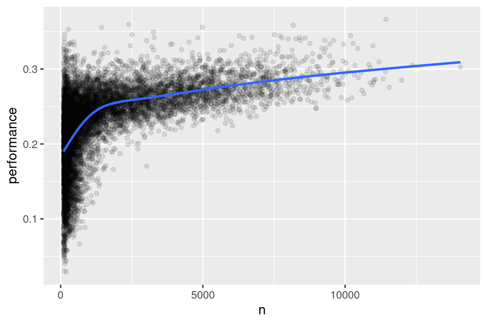

library(nycflights13)
library(tidyverse)
#> ── Attaching core tidyverse packages ───────────────────── tidyverse 2.0.0 ──
#> ✔ dplyr 1.1.4.9000 ✔ readr 2.1.5
#> ✔ forcats 1.0.0 ✔ stringr 1.5.1
#> ✔ ggplot2 3.5.0 ✔ tibble 3.2.1
#> ✔ lubridate 1.9.3 ✔ tidyr 1.3.1
#> ✔ purrr 1.0.2
#> ── Conflicts ─────────────────────────────────────── tidyverse_conflicts() ──
#> ✖ dplyr::filter() masks stats::filter()
#> ✖ dplyr::lag() masks stats::lag()
#> ℹ Use the conflicted package (<http://conflicted.r-lib.org/>) to force all conflicts to become errors3 Μετασχηματισμός Δεδομένων
3.1 Εισαγωγή
Η οπτικοποίηση είναι ένα σημαντικό εργαλείο για τη δημιουργία γνώσης, αλλά είναι σπάνιο να λαμβάνετε τα δεδομένα ακριβώς με τη σωστή μορφή που χρειάζεστε για να δημιουργήσετε το διάγραμμα που θέλετε. Συχνά θα χρειαστεί να δημιουργήσετε μερικές νέες μεταβλητές ή συνόψεις για να απαντήσετε τις ερωτήσεις σας με τα δεδομένα σας ή ίσως απλώς θέλετε να μετονομάσετε τις μεταβλητές ή να αναδιατάξετε τις παρατηρήσεις για να κάνετε τα δεδομένα λίγο πιο εύκολα στο χειρισμό. Θα μάθετε πώς να τα κάνετε όλα αυτά (και πολλά άλλα!) σε αυτό το κεφάλαιο, το οποίο θα σας δώσει μία εισαγωγή στον μετασχηματισμό δεδομένων χρησιμοποιώντας το πακέτο dplyr και ένα νέο σύνολο δεδομένων με πτήσεις που αναχώρησαν από τη Νέα Υόρκη το 2013.
Ο στόχος αυτού του κεφαλαίου είναι να σας δώσει μία επισκόπηση όλων των βασικών εργαλείων για τη μετατροπή ενός πλαισίου δεδομένων. Θα ξεκινήσουμε με συναρτήσεις που εφαρμόζονται σε γραμμές και στη συνέχεια σε στήλες ενός πλαισίου δεδομένων και, στη συνέχεια, θα επιστρέψουμε για να μιλήσουμε περισσότερο για το pipe, ένα σημαντικό εργαλείο που χρησιμοποιείτε για να συνδυάσετε συναρτήσεις. Στη συνέχεια θα εισαγάγουμε την ικανότητα εργασίας με ομάδες δεδομένων. Θα τελειώσουμε το κεφάλαιο με μία μελέτη περίπτωσης που παρουσιάζει αυτές τις συναρτήσεις εν δράση και θα επανέλθουμε στις συναρτήσεις με περισσότερες λεπτομέρειες σε επόμενα κεφάλαια, καθώς θα αρχίζουμε να εξερευνούμε συγκεκριμένους τύπους δεδομένων (π.χ. αριθμούς, συμβολοσειρές, ημερομηνίες).
3.1.1 Προαπαιτούμενα
Σε αυτό το κεφάλαιο θα επικεντρωθούμε στο πακέτο dplyr, ακόμη ένα βασικό μέλος του tidyverse. Θα παρουσιάσουμε τις βασικές ιδέες χρησιμοποιώντας δεδομένα από το πακέτο nycflights13 και θα χρησιμοποιήσουμε το πακέτο ggplot2 για να μας βοηθήσει να κατανοήσουμε τα δεδομένα.
Παρατηρήστε προσεκτικά το μήνυμα συγκρούσεων που εκτυπώνεται όταν φορτώνετε το tidyverse. Σας λέει ότι το πακέτο dplyr αντικαθιστά ορισμένες συναρτήσεις από το βασικό σύνολο λειτουργιών της R. Εάν θέλετε να χρησιμοποιήσετε τη βασική έκδοση αυτών των συναρτήσεων μετά τη φόρτωση της dplyr, θα πρέπει να χρησιμοποιήσετε τα πλήρη ονόματά τους: stats::filter() και stats::lag(). Μέχρι στιγμής έχουμε αγνοήσει από ποιο πακέτο προέρχεται μία συνάρτηση γιατί τις περισσότερες φορές δεν έχει σημασία. Ωστόσο, η γνώση του πακέτου μπορεί να σας βοηθήσει να αναζητήσετε βοήθεια και να βρείτε σχετικές συναρτήσεις, οπότε όταν πρέπει να είμαστε ακριβείς σχετικά με το πακέτο από το οποίο προέρχεται μία συνάρτηση, θα χρησιμοποιήσουμε την ίδια σύνταξη με την R: packagename::functionname().
3.1.2 nycflights13
Για να εξερευνήσουμε τις βασικές συναρτήσεις της dplyr, θα χρησιμοποιήσουμε το σύνολο δεδομένων nycflights13::flights. Αυτό περιέχει όλες τις 336,776 πτήσεις που αναχώρησαν από την πόλη της Νέας Υόρκης το 2013. Αυτά τα δεδομένα προέρχονται από το Γραφείο Στατιστικών Μεταφορών των ΗΠΑ και τεκμηριώνονται στο ?flights.
flights
#> # A tibble: 336,776 × 19
#> year month day dep_time sched_dep_time dep_delay arr_time sched_arr_time
#> <int> <int> <int> <int> <int> <dbl> <int> <int>
#> 1 2013 1 1 517 515 2 830 819
#> 2 2013 1 1 533 529 4 850 830
#> 3 2013 1 1 542 540 2 923 850
#> 4 2013 1 1 544 545 -1 1004 1022
#> 5 2013 1 1 554 600 -6 812 837
#> 6 2013 1 1 554 558 -4 740 728
#> # ℹ 336,770 more rows
#> # ℹ 11 more variables: arr_delay <dbl>, carrier <chr>, flight <int>, …Το flights είναι ένα tibble, ένας ειδικός τύπος πλαισίου δεδομένων που χρησιμοποιείται από το tidyverse για να αποφευχθούν ορισμένες συχνές προκλήσεις. Η πιο σημαντική διαφορά μεταξύ των tibbles και των πλαισίων δεδομένων είναι ο τρόπος εκτύπωσης των tibbles. Τα πρώτα έχουν σχεδιαστεί για μεγάλα σύνολα δεδομένων, επομένως εμφανίζουν μόνο τις πρώτες λίγες σειρές και μόνο τις στήλες που χωρούν σε μία οθόνη. Υπάρχουν μερικές επιλογές για να δείτε τα πάντα. Εάν χρησιμοποιείτε το RStudio, το πιο βολικό είναι ίσως το View(flights), το οποίο θα ανοίξει μία διαδραστική προβολή με δυνατότητα κύλισης και φιλτραρίσματος. Διαφορετικά, μπορείτε να χρησιμοποιήσετε την print(flights, width = Inf) για να εμφανίσετε όλες τις στήλες ή να χρησιμοποιήσετε την glimpse():
glimpse(flights)
#> Rows: 336,776
#> Columns: 19
#> $ year <int> 2013, 2013, 2013, 2013, 2013, 2013, 2013, 2013, 2013…
#> $ month <int> 1, 1, 1, 1, 1, 1, 1, 1, 1, 1, 1, 1, 1, 1, 1, 1, 1, 1…
#> $ day <int> 1, 1, 1, 1, 1, 1, 1, 1, 1, 1, 1, 1, 1, 1, 1, 1, 1, 1…
#> $ dep_time <int> 517, 533, 542, 544, 554, 554, 555, 557, 557, 558, 55…
#> $ sched_dep_time <int> 515, 529, 540, 545, 600, 558, 600, 600, 600, 600, 60…
#> $ dep_delay <dbl> 2, 4, 2, -1, -6, -4, -5, -3, -3, -2, -2, -2, -2, -2,…
#> $ arr_time <int> 830, 850, 923, 1004, 812, 740, 913, 709, 838, 753, 8…
#> $ sched_arr_time <int> 819, 830, 850, 1022, 837, 728, 854, 723, 846, 745, 8…
#> $ arr_delay <dbl> 11, 20, 33, -18, -25, 12, 19, -14, -8, 8, -2, -3, 7,…
#> $ carrier <chr> "UA", "UA", "AA", "B6", "DL", "UA", "B6", "EV", "B6"…
#> $ flight <int> 1545, 1714, 1141, 725, 461, 1696, 507, 5708, 79, 301…
#> $ tailnum <chr> "N14228", "N24211", "N619AA", "N804JB", "N668DN", "N…
#> $ origin <chr> "EWR", "LGA", "JFK", "JFK", "LGA", "EWR", "EWR", "LG…
#> $ dest <chr> "IAH", "IAH", "MIA", "BQN", "ATL", "ORD", "FLL", "IA…
#> $ air_time <dbl> 227, 227, 160, 183, 116, 150, 158, 53, 140, 138, 149…
#> $ distance <dbl> 1400, 1416, 1089, 1576, 762, 719, 1065, 229, 944, 73…
#> $ hour <dbl> 5, 5, 5, 5, 6, 5, 6, 6, 6, 6, 6, 6, 6, 6, 6, 5, 6, 6…
#> $ minute <dbl> 15, 29, 40, 45, 0, 58, 0, 0, 0, 0, 0, 0, 0, 0, 0, 59…
#> $ time_hour <dttm> 2013-01-01 05:00:00, 2013-01-01 05:00:00, 2013-01-0…Και στις δύο όψεις, τα ονόματα των μεταβλητών ακολουθούνται από συντομογραφίες που σας λένε τον τύπο κάθε μεταβλητής: το <int> είναι συντομογραφία για ακέραιους αριθμούς, το <dbl> για πραγματικούς αριθμούς, το <chr> για χαρακτήρες (γνωστοί και ως συμβολοσειρές) και το <dttm> για ημερομηνίες-ώρα. Όλα αυτά είναι σημαντικά επειδή οι χειρισμοί που μπορείτε να εφαρμόσετε σε μία στήλη εξαρτώνται πολύ από τον “τύπο” της.
3.1.3 Βασικές αρχές της dplyr
Ακολουθούν οι κύριες συναρτήσεις της dplyr που θα σας επιτρέψουν να λύσετε τη συντριπτική πλειονότητα των προκλήσεων χειρισμού δεδομένων που θα συναντήσετε. Αλλά πριν συζητήσουμε τις μεμονωμένες διαφορές τους, αξίζει να αναφέρουμε τι κοινό έχουν:
Το πρώτο τους όρισμα είναι πάντα ένα πλαίσιο δεδομένων.
Τα επόμενα ορίσματα συνήθως περιγράφουν σε ποιες στήλες θα λειτουργήσουν, χρησιμοποιώντας τα ονόματα των μεταβλητών (χωρίς εισαγωγικά).
Η έξοδος είναι πάντα ένα νέο πλαίσιο δεδομένων.
Επειδή κάθε συνάρτηση κάνει ένα πράγμα καλά, η επίλυση σύνθετων προβλημάτων συνήθως απαιτεί συνδυασμό πολλών συναρτήσεων, και αυτό θα το κάνουμε με το pipe, |>. Θα συζητήσουμε το pipe περισσότερο στην Ενότητα 3.4, αλλά εν συντομία, παίρνει ό,τι υπάρχει στα αριστερά του και το περνά στη συνάρτηση στα δεξιά του, έτσι ώστε το x |> f(y) να είναι ισοδύναμο με f(x, y), και το x |> f(y) |> g(z) ισοδυναμεί με g(f(x, y), z). Ο ευκολότερος τρόπος για να περιγράψετε το pipe είναι με τη λέξη “τότε”. Αυτό καθιστά δυνατό να αποκτήσετε μία αίσθηση του παρακάτω κώδικα, παρόλο που δεν έχετε μάθει ακόμη τις λεπτομέρειες:
Οι συναρτήσεις της dplyr οργανώνονται σε τέσσερις ομάδες με βάση το σε τι εφαρμόζονται: γραμμές, στήλες, ομάδες ή πίνακες. Στις επόμενες ενότητες θα μάθετε τις πιο σημαντικές συναρτήσεις για γραμμές, στήλες και ομάδες και, στη συνέχεια, θα επιστρέψουμε στις συναρτήσεις join που λειτουργούν σε πίνακες στο Κεφάλαιο 19. Ας αρχίσουμε!
3.2 Γραμμές
Οι πιο σημαντικές συναρτήσεις που λειτουργούν στις γραμμές ενός συνόλου δεδομένων είναι η filter(), η οποία αλλάζει το ποιες γραμμές θα παρουσιάζονται χωρίς να αλλάξει τη σειρά τους και η arrange(), η οποία αλλάζει τη σειρά των γραμμών χωρίς να αλλάζει ποιες υπάρχουν. Και οι δύο συναρτήσεις επηρεάζουν μόνο τις γραμμές και οι στήλες παραμένουν αμετάβλητες. Θα συζητήσουμε επίσης και την distinct() που βρίσκει γραμμές με μοναδικές τιμές αλλά σε αντίθεση με την arrange() και την filter() μπορεί επίσης να τροποποιήσει προαιρετικά τις στήλες.
3.2.1 filter()
Η filter() σας επιτρέπει να διατηρείτε γραμμές με βάση τις τιμές των στηλών1. Το πρώτο όρισμα είναι το πλαίσιο δεδομένων. Το δεύτερο και τα επόμενα ορίσματα είναι οι συνθήκες που πρέπει να ισχύουν για να διατηρηθεί η σειρά. Για παράδειγμα, θα μπορούσαμε να βρούμε όλες τις πτήσεις που αναχώρησαν με καθυστέρηση μεγαλύτερη των 120 λεπτών (δύο ώρες):
flights |>
filter(dep_delay > 120)
#> # A tibble: 9,723 × 19
#> year month day dep_time sched_dep_time dep_delay arr_time sched_arr_time
#> <int> <int> <int> <int> <int> <dbl> <int> <int>
#> 1 2013 1 1 848 1835 853 1001 1950
#> 2 2013 1 1 957 733 144 1056 853
#> 3 2013 1 1 1114 900 134 1447 1222
#> 4 2013 1 1 1540 1338 122 2020 1825
#> 5 2013 1 1 1815 1325 290 2120 1542
#> 6 2013 1 1 1842 1422 260 1958 1535
#> # ℹ 9,717 more rows
#> # ℹ 11 more variables: arr_delay <dbl>, carrier <chr>, flight <int>, …Εκτός από το > (μεγαλύτερο από), μπορείτε να χρησιμοποιήσετε και το >= (μεγαλύτερο ή ίσο με), το< (μικρότερο από), το <=(μικρότερο από ή ίσο με), το == (ίσο με), και το != (διαφορετικό). Μπορείτε επίσης να συνδυάσετε συνθήκες με & ή , για να υποδείξετε το “και” (έλεγχος και για τις δύο συνθήκες) ή με | για να υποδείξετε το “ή” (έλεγχος για οποιαδήποτε από τις δύο συνθήκες):
# Πτήσεις που αναχώρησαν την 1η Ιανουαρίου
flights |>
filter(month == 1 & day == 1)
#> # A tibble: 842 × 19
#> year month day dep_time sched_dep_time dep_delay arr_time sched_arr_time
#> <int> <int> <int> <int> <int> <dbl> <int> <int>
#> 1 2013 1 1 517 515 2 830 819
#> 2 2013 1 1 533 529 4 850 830
#> 3 2013 1 1 542 540 2 923 850
#> 4 2013 1 1 544 545 -1 1004 1022
#> 5 2013 1 1 554 600 -6 812 837
#> 6 2013 1 1 554 558 -4 740 728
#> # ℹ 836 more rows
#> # ℹ 11 more variables: arr_delay <dbl>, carrier <chr>, flight <int>, …
# Πτήσεις που αναχώρησαν τον Ιανουάριο ή τον Φεβρουάριο
flights |>
filter(month == 1 | month == 2)
#> # A tibble: 51,955 × 19
#> year month day dep_time sched_dep_time dep_delay arr_time sched_arr_time
#> <int> <int> <int> <int> <int> <dbl> <int> <int>
#> 1 2013 1 1 517 515 2 830 819
#> 2 2013 1 1 533 529 4 850 830
#> 3 2013 1 1 542 540 2 923 850
#> 4 2013 1 1 544 545 -1 1004 1022
#> 5 2013 1 1 554 600 -6 812 837
#> 6 2013 1 1 554 558 -4 740 728
#> # ℹ 51,949 more rows
#> # ℹ 11 more variables: arr_delay <dbl>, carrier <chr>, flight <int>, …Υπάρχει μία χρήσιμη συντόμευση όταν συνδυάζετε τα | και ==: το %in%. Διατηρεί γραμμές όπου η μεταβλητή ισούται με μία από τις τιμές στα δεξιά:
# Ένας πιο σύντομος τρόπος για να επιλέξετε πτήσεις που αναχώρησαν τον Ιανουάριο ή τον Φεβρουάριο
flights |>
filter(month %in% c(1, 2))
#> # A tibble: 51,955 × 19
#> year month day dep_time sched_dep_time dep_delay arr_time sched_arr_time
#> <int> <int> <int> <int> <int> <dbl> <int> <int>
#> 1 2013 1 1 517 515 2 830 819
#> 2 2013 1 1 533 529 4 850 830
#> 3 2013 1 1 542 540 2 923 850
#> 4 2013 1 1 544 545 -1 1004 1022
#> 5 2013 1 1 554 600 -6 812 837
#> 6 2013 1 1 554 558 -4 740 728
#> # ℹ 51,949 more rows
#> # ℹ 11 more variables: arr_delay <dbl>, carrier <chr>, flight <int>, …Θα επανέλθουμε σε αυτές τις συγκρίσεις και τους λογικούς τελεστές με περισσότερες λεπτομέρειες στο Κεφάλαιο 12.
Όταν εκτελείτε την filter(), το πακέτο dplyr εκτελεί τη λειτουργία φιλτραρίσματος, δημιουργώντας ένα νέο πλαίσιο δεδομένων και, στη συνέχεια, το εκτυπώνει. Δεν τροποποιεί το υπάρχον σύνολο δεδομένων flights, επειδή οι συναρτήσεις της dplyr δεν τροποποιούν ποτέ τις εισόδους τους. Για να αποθηκεύσετε το αποτέλεσμα, πρέπει να χρησιμοποιήσετε τον τελεστή ανάθεσης, <-:
jan1 <- flights |>
filter(month == 1 & day == 1)3.2.2 Συχνά λάθη
Όταν ξεκινάτε με την R, το πιο εύκολο λάθος που μπορείτε να κάνετε είναι να χρησιμοποιήσετε το = αντί για το == όταν ελέγχετε για ισότητα. Η filter() θα σας ενημερώσει όταν συμβεί αυτό:
flights |>
filter(month = 1)
#> Error in `filter()`:
#> ! We detected a named input.
#> ℹ This usually means that you've used `=` instead of `==`.
#> ℹ Did you mean `month == 1`?Άλλο ένα κοινό λάθος είναι ότι γράφετε “or” δηλώσεις όπως θα κάνατε στα αγγλικά:
flights |>
filter(month == 1 | 2)Ο παραπάνω κώδικας “δουλεύει”, με την έννοια ότι δεν επιστρέφει σφάλμα, αλλά δεν κάνει αυτό που θέλετε επειδή το | ελέγχει πρώτα τη συνθήκη month == 1 και μετά ελέγχει τη συνθήκη 2, η οποία δεν είναι μία λογική συνθήκη για έλεγχο. Θα μάθουμε περισσότερα για το τι συμβαίνει εδώ και γιατί στην Ενότητα 15.6.2.
3.2.3 arrange()
Η arrange() αλλάζει τη σειρά των γραμμών με βάση την τιμή των στηλών. Δέχεται σαν ορίσματα ένα πλαίσιο δεδομένων και ένα σύνολο ονομάτων στηλών (ή πιο περίπλοκων εκφράσεων) για να τα ταξινομήσετε. Εάν παρέχετε περισσότερα από ένα ονόματα στηλών, κάθε πρόσθετη στήλη θα χρησιμοποιηθεί για την επίλυση ισοπαλιών στις τιμές των προηγούμενων στηλών. Για παράδειγμα, ο παρακάτω κώδικας ταξινομεί τις γραμμές με βάση την ώρα αναχώρησης, η οποία κατανέμεται σε τέσσερις στήλες. Πρώτα παίρνουμε τα πιο πρόσφατα χρόνια, και στη συνέχεια ανάμεσα σε ένα χρόνο τους πρώτους μήνες κ.ο.κ.
flights |>
arrange(year, month, day, dep_time)
#> # A tibble: 336,776 × 19
#> year month day dep_time sched_dep_time dep_delay arr_time sched_arr_time
#> <int> <int> <int> <int> <int> <dbl> <int> <int>
#> 1 2013 1 1 517 515 2 830 819
#> 2 2013 1 1 533 529 4 850 830
#> 3 2013 1 1 542 540 2 923 850
#> 4 2013 1 1 544 545 -1 1004 1022
#> 5 2013 1 1 554 600 -6 812 837
#> 6 2013 1 1 554 558 -4 740 728
#> # ℹ 336,770 more rows
#> # ℹ 11 more variables: arr_delay <dbl>, carrier <chr>, flight <int>, …Μπορείτε να χρησιμοποιήσετε το όρισμα desc() σε μία στήλη μέσα στην arrange() για να αναδιατάξετε το πλαίσιο δεδομένων με βάση αυτή τη στήλη με φθίνουσα σειρά (μεγαλύτερο προς μικρότερο). Για παράδειγμα, ο ακόλουθος κώδικας διατάσσει τις πτήσεις ανάλογα με την καθυστέρηση που έχουν σημειώσει, από τις μεγαλύτερες έως τις μικρότερες:
flights |>
arrange(desc(dep_delay))
#> # A tibble: 336,776 × 19
#> year month day dep_time sched_dep_time dep_delay arr_time sched_arr_time
#> <int> <int> <int> <int> <int> <dbl> <int> <int>
#> 1 2013 1 9 641 900 1301 1242 1530
#> 2 2013 6 15 1432 1935 1137 1607 2120
#> 3 2013 1 10 1121 1635 1126 1239 1810
#> 4 2013 9 20 1139 1845 1014 1457 2210
#> 5 2013 7 22 845 1600 1005 1044 1815
#> 6 2013 4 10 1100 1900 960 1342 2211
#> # ℹ 336,770 more rows
#> # ℹ 11 more variables: arr_delay <dbl>, carrier <chr>, flight <int>, …Σημειώστε ότι ο αριθμός των γραμμών δεν έχει αλλάξει – τακτοποιούμε μόνο τα δεδομένα, δεν τα φιλτράρουμε.
3.2.4 distinct()
Η distinct() βρίσκει όλες τις μοναδικές γραμμές σε ένα σύνολο δεδομένων, επομένως από τεχνική άποψη, λειτουργεί κυρίως στις γραμμές. Τις περισσότερες φορές, ωστόσο, θα θέλετε τον διακριτό συνδυασμό ορισμένων μεταβλητών, οπότε μπορείτε επίσης να παρέχετε προαιρετικά ονόματα στηλών:
# Αφαιρέστε τις διπλότυπες γραμμές, εάν υπάρχουν
flights |>
distinct()
#> # A tibble: 336,776 × 19
#> year month day dep_time sched_dep_time dep_delay arr_time sched_arr_time
#> <int> <int> <int> <int> <int> <dbl> <int> <int>
#> 1 2013 1 1 517 515 2 830 819
#> 2 2013 1 1 533 529 4 850 830
#> 3 2013 1 1 542 540 2 923 850
#> 4 2013 1 1 544 545 -1 1004 1022
#> 5 2013 1 1 554 600 -6 812 837
#> 6 2013 1 1 554 558 -4 740 728
#> # ℹ 336,770 more rows
#> # ℹ 11 more variables: arr_delay <dbl>, carrier <chr>, flight <int>, …
# Βρείτε όλα τα μοναδικά ζεύγη προέλευσης και προορισμού
flights |>
distinct(origin, dest)
#> # A tibble: 224 × 2
#> origin dest
#> <chr> <chr>
#> 1 EWR IAH
#> 2 LGA IAH
#> 3 JFK MIA
#> 4 JFK BQN
#> 5 LGA ATL
#> 6 EWR ORD
#> # ℹ 218 more rowsΕναλλακτικά, εάν θέλετε να διατηρήσετε άλλες στήλες κατά το φιλτράρισμα για μοναδικές γραμμές, μπορείτε να χρησιμοποιήσετε την επιλογή .keep_all = TRUE.
flights |>
distinct(origin, dest, .keep_all = TRUE)
#> # A tibble: 224 × 19
#> year month day dep_time sched_dep_time dep_delay arr_time sched_arr_time
#> <int> <int> <int> <int> <int> <dbl> <int> <int>
#> 1 2013 1 1 517 515 2 830 819
#> 2 2013 1 1 533 529 4 850 830
#> 3 2013 1 1 542 540 2 923 850
#> 4 2013 1 1 544 545 -1 1004 1022
#> 5 2013 1 1 554 600 -6 812 837
#> 6 2013 1 1 554 558 -4 740 728
#> # ℹ 218 more rows
#> # ℹ 11 more variables: arr_delay <dbl>, carrier <chr>, flight <int>, …Δεν είναι τυχαίο ότι όλες αυτές οι ξεχωριστές πτήσεις πραγματοποιούνται την 1η Ιανουαρίου: Η distinct() θα βρει την πρώτη εμφάνιση μιας μοναδικής γραμμής στο σύνολο δεδομένων και θα απορρίψει τις υπόλοιπες.
Εάν θέλετε να βρείτε τον αριθμό των εμφανίσεων, καλύτερα να αντικαταστήσετε την distinct() με την count(), ενώ χρησιμοποιώντας το όρισμα sort = TRUE μπορείτε να τις διατάξετε σε φθίνουσα σειρά σύμφωνα με τον αριθμό εμφανίσεων. Θα μάθετε περισσότερα για τα αθροίσματα στην Ενότητα 13.3.
flights |>
count(origin, dest, sort = TRUE)
#> # A tibble: 224 × 3
#> origin dest n
#> <chr> <chr> <int>
#> 1 JFK LAX 11262
#> 2 LGA ATL 10263
#> 3 LGA ORD 8857
#> 4 JFK SFO 8204
#> 5 LGA CLT 6168
#> 6 EWR ORD 6100
#> # ℹ 218 more rows3.2.5 Ασκήσεις
-
Σε μία μόνο ροή για κάθε συνθήκη, βρείτε όλες τις πτήσεις που πληρούν την προϋπόθεση:
- Να είχε καθυστέρηση άφιξης δύο ή περισσότερων ωρών
- Να πέταξε στο Χιούστον («IAH» ή «HOU»)
- Να λειτουργούσαν από τις αεροπορικές εταιρείες United, American ή Delta
- Να αναχώρησε το καλοκαίρι (Ιούλιο, Αύγουστο και Σεπτέμβριο)
- Να έφτασε με περισσότερο από δύο ώρες καθυστέρηση, αλλά δεν αναχώρησε με καθυστέρηση
- Να καθυστέρησαν τουλάχιστον μία ώρα, αλλά συμπληρώθηκαν πάνω από 30 λεπτά κατά την πτήση
Ταξινομήστε το
flightsγια να βρείτε τις πτήσεις με τις μεγαλύτερες καθυστερήσεις αναχώρησης. Βρείτε τις πτήσεις που έφυγαν πιο νωρίς το πρωί.Ταξινομήστε το
flightsγια να βρείτε τις ταχύτερες πτήσεις. (Υπόδειξη: Δοκιμάστε να συμπεριλάβετε έναν μαθηματικό υπολογισμό μέσα στη συνάρτησή σας.)Υπήρχε πτήση κάθε μέρα του 2013;
Ποιες πτήσεις διένυσαν τη μεγαλύτερη απόσταση; Ποιο ταξίδεψε τη λιγότερη απόσταση;
Έχει σημασία με ποια σειρά χρησιμοποιήσατε την
filter()και τηνarrange()εάν χρησιμοποιείτε και τις δύο; Γιατί/γιατί όχι? Σκεφτείτε τα αποτελέσματα και πόση δουλειά θα πρέπει να κάνουν αυτές οι συναρτήσεις.
3.3 Στήλες
Υπάρχουν τέσσερις σημαντικές συναρτήσεις που επηρεάζουν τις στήλες χωρίς να αλλάζουν τις γραμμές: η mutate() δημιουργεί νέες στήλες που προέρχονται από τις ήδη υπάρχουσες στήλες, η select() που αλλάζει τις στήλες που είναι παρούσες, η rename() που αλλάζει τα ονόματα των στηλών και η relocate() που αλλάζει τις θέσεις των στηλών.
3.3.1 mutate()
Η δουλειά της mutate() είναι να προσθέτει νέες στήλες που υπολογίζονται από τις υπάρχουσες. Στα κεφάλαια του μετασχηματισμού δεδομένων, θα μάθετε ένα μεγάλο σύνολο συναρτήσεων το οποίο μπορείτε να χρησιμοποιήσετε για να χειριστείτε διαφορετικούς τύπους μεταβλητών. Προς το παρόν, θα παραμείνουμε στη βασική άλγεβρα, η οποία μας επιτρέπει να υπολογίσουμε το κέρδος (gain), τον χρόνο που έχει περάσει στον αέρα μία καθυστερημένη πτήση, και την ταχύτητα (speed) σε μίλια ανά ώρα:
flights |>
mutate(
gain = dep_delay - arr_delay,
speed = distance / air_time * 60
)
#> # A tibble: 336,776 × 21
#> year month day dep_time sched_dep_time dep_delay arr_time sched_arr_time
#> <int> <int> <int> <int> <int> <dbl> <int> <int>
#> 1 2013 1 1 517 515 2 830 819
#> 2 2013 1 1 533 529 4 850 830
#> 3 2013 1 1 542 540 2 923 850
#> 4 2013 1 1 544 545 -1 1004 1022
#> 5 2013 1 1 554 600 -6 812 837
#> 6 2013 1 1 554 558 -4 740 728
#> # ℹ 336,770 more rows
#> # ℹ 13 more variables: arr_delay <dbl>, carrier <chr>, flight <int>, …Από προεπιλογή, η mutate() προσθέτει νέες στήλες στη δεξιά πλευρά του συνόλου δεδομένων σας, γεγονός που καθιστά δύσκολο να δείτε τι έχει συμβεί. Γι’ αυτό μπορούμε να χρησιμοποιήσουμε το όρισμα .before για να προσθέσουμε τις μεταβλητές στην αριστερή πλευρά2:
flights |>
mutate(
gain = dep_delay - arr_delay,
speed = distance / air_time * 60,
.before = 1
)
#> # A tibble: 336,776 × 21
#> gain speed year month day dep_time sched_dep_time dep_delay arr_time
#> <dbl> <dbl> <int> <int> <int> <int> <int> <dbl> <int>
#> 1 -9 370. 2013 1 1 517 515 2 830
#> 2 -16 374. 2013 1 1 533 529 4 850
#> 3 -31 408. 2013 1 1 542 540 2 923
#> 4 17 517. 2013 1 1 544 545 -1 1004
#> 5 19 394. 2013 1 1 554 600 -6 812
#> 6 -16 288. 2013 1 1 554 558 -4 740
#> # ℹ 336,770 more rows
#> # ℹ 12 more variables: sched_arr_time <int>, arr_delay <dbl>, …Το . υποδεικνύει ότι το .before είναι ένα όρισμα στη συνάρτηση, και όχι το όνομα μιας τρίτης νέας μεταβλητής που θα δημιουργήσουμε. Μπορείτε επίσης να χρησιμοποιήσετε το όρισμα .after για να προσθέσετε τη νέα στήλη μετά από μία συγκεκριμένη μεταβλητή, ενώ τόσο στο όρισμα .before όσο και στο .after μπορείτε να χρησιμοποιήσετε το όνομα της μεταβλητής αντί για τη θέση της. Για παράδειγμα, θα μπορούσαμε να προσθέσουμε τις νέες μεταβλητές μετά την day:
flights |>
mutate(
gain = dep_delay - arr_delay,
speed = distance / air_time * 60,
.after = day
)Εναλλακτικά, μπορείτε να ελέγξετε ποιες μεταβλητές θα διατηρηθούν με το όρισμα .keep. Ένα ιδιαίτερα χρήσιμο όρισμα είναι το "used" που προσδιορίζει ότι θέλουμε να διατηρήσουμε μόνο τις στήλες που εμπλέκονται ή δημιουργήθηκαν στο βήμα της mutate(). Για παράδειγμα, η ακόλουθη έξοδος θα περιέχει μόνο τις μεταβλητές dep_delay, arr_delay, air_time, gain, hours, και gain_per_hour.
flights |>
mutate(
gain = dep_delay - arr_delay,
hours = air_time / 60,
gain_per_hour = gain / hours,
.keep = "used"
)Έχετε υπόψη ότι επειδή δεν έχουμε αναθέσει το αποτέλεσμα του παραπάνω υπολογισμού πίσω στις flights, οι νέες μεταβλητές gain, hours, και gain_per_hour θα τυπωθούν αλλά δεν θα αποθηκευτούν σε ένα πλαίσιο δεδομένων. Εάν θέλουμε να είναι διαθέσιμα σε ένα πλαίσιο δεδομένων για μελλοντική χρήση, θα πρέπει να σκεφτούμε προσεκτικά εάν θέλουμε το αποτέλεσμα να ανατεθεί ξανά στο flights, αντικαθιστώντας το αρχικό πλαίσιο δεδομένων με πολλές περισσότερες μεταβλητές ή σε ένα νέο αντικείμενο . Συχνά, η σωστή απάντηση είναι ένα νέο αντικείμενο που ονομάζεται με τρόπο που υποδεικνύει το περιεχόμενό του, π.χ. delay_gain, αλλά μπορεί επίσης να έχετε καλούς λόγους για την αντικατάσταση του flights.
3.3.2 select()
Δεν είναι ασυνήθιστο να λαμβάνετε σύνολα δεδομένων με εκατοντάδες ή και χιλιάδες μεταβλητές. Σε αυτήν την περίπτωση, η πρώτη πρόκληση είναι συχνά απλώς να εστιάσετε στις μεταβλητές που σας ενδιαφέρουν. Η select() επιτρέπει να εστιάζεται γρήγορα σε ένα χρήσιμο υποσύνολο χρησιμοποιώντας λειτουργίες που βασίζονται στα ονόματα των μεταβλητών:
-
Επιλογή στηλών με το όνομα τους:
flights |> select(year, month, day) -
Επιλογή όλων των στηλών που βρίσκονται ανάμεσα στις στήλες year και day (συμπερίληψη):
flights |> select(year:day) -
Επιλογή όλων των μεταβλητών εκτός αυτών που βρίσκονται ανάμεσα στις στήλες year και day (αποκλεισμός):
flights |> select(!year:day)Ιστορικά, αυτή η εργασία γινόταν με το
-αντί για το!, οπότε είναι πιθανό να το συναντήσετε εκεί έξω. Αυτοί οι δύο χειριστές υπηρετούν τον ίδιο σκοπό, με μικρές διαφορές ως προς τη συμπεριφορά τους. Συνιστούμε να χρησιμοποιείτε το!μιας και διαβάζεται ως “όχι”, και συνδυάζεται καλά με τα&και|. -
Επιλέξτε όλες τις στήλες που είναι χαρακτήρες:
Υπάρχει ένας αριθμός βοηθητικών συναρτήσεων που μπορείτε να χρησιμοποιήσετε μέσα στη select():
-
starts_with("abc"): επιλέγει στήλες των οποίων τα ονόματα ξεκινούν με “abc”. -
ends_with("xyz"): επιλέγει στήλες των οποίων τα ονόματα τελειώνουν σε “xyz”. -
contains("ijk"): επιλέγει στήλες των οποίων τα ονόματα περιέχουν το “ijk”. -
Num_range("x", 1:3): επιλέγει τις στήλεςx1,x2καιx3.
Δείτε την εντολή ?select για περισσότερες λεπτομέρειες. Μόλις μάθετε για τις κανονικές εκφράσεις (το αντικείμενο στο Κεφάλαιο 15), θα μπορείτε επίσης να χρησιμοποιήσετε την matches() για να επιλέξετε μεταβλητές που ταιριάζουν σε ένα μοτίβο.
Μπορείτε να μετονομάσετε τις μεταβλητές καθώς τις επιλέγετε με την select() χρησιμοποιώντας το =. Το νέο όνομα εμφανίζεται στην αριστερή πλευρά του = και η παλιά μεταβλητή στη δεξιά πλευρά:
flights |>
select(tail_num = tailnum)
#> # A tibble: 336,776 × 1
#> tail_num
#> <chr>
#> 1 N14228
#> 2 N24211
#> 3 N619AA
#> 4 N804JB
#> 5 N668DN
#> 6 N39463
#> # ℹ 336,770 more rows
3.3.3 rename()
Εάν θέλετε να διατηρήσετε όλες τις υπάρχουσες μεταβλητές και απλώς να μετονομάσετε μερικές, μπορείτε να χρησιμοποιήσετε την rename() αντί για την select():
flights |>
rename(tail_num = tailnum)
#> # A tibble: 336,776 × 19
#> year month day dep_time sched_dep_time dep_delay arr_time sched_arr_time
#> <int> <int> <int> <int> <int> <dbl> <int> <int>
#> 1 2013 1 1 517 515 2 830 819
#> 2 2013 1 1 533 529 4 850 830
#> 3 2013 1 1 542 540 2 923 850
#> 4 2013 1 1 544 545 -1 1004 1022
#> 5 2013 1 1 554 600 -6 812 837
#> 6 2013 1 1 554 558 -4 740 728
#> # ℹ 336,770 more rows
#> # ℹ 11 more variables: arr_delay <dbl>, carrier <chr>, flight <int>, …Εάν έχετε ένα σωρό στήλες με ασυνεπή ονόματα, τις οποίες θα ήταν επώδυνο να διορθώσετε όλες με το χέρι, ανατρέξτε στην janitor::clean_names() η οποία παρέχει χρήσιμες δυνατότητες αυτοματοποιημένου καθαρισμού των δεδομένων.
3.3.4 relocate()
Χρησιμοποιήστε την relocate() για να αλλάξετε θέση στις μεταβλητές. Μπορεί να θέλετε να συλλέξετε σχετικές μεταβλητές μαζί ή να μετακινήσετε σημαντικές μεταβλητές στο μπροστινό μέρος. Ως προεπιλογή η relocate() μετακινεί τις μεταβλητές στην αρχή του πλαισίου δεδομένων:
flights |>
relocate(time_hour, air_time)
#> # A tibble: 336,776 × 19
#> time_hour air_time year month day dep_time sched_dep_time
#> <dttm> <dbl> <int> <int> <int> <int> <int>
#> 1 2013-01-01 05:00:00 227 2013 1 1 517 515
#> 2 2013-01-01 05:00:00 227 2013 1 1 533 529
#> 3 2013-01-01 05:00:00 160 2013 1 1 542 540
#> 4 2013-01-01 05:00:00 183 2013 1 1 544 545
#> 5 2013-01-01 06:00:00 116 2013 1 1 554 600
#> 6 2013-01-01 05:00:00 150 2013 1 1 554 558
#> # ℹ 336,770 more rows
#> # ℹ 12 more variables: dep_delay <dbl>, arr_time <int>, …Μπορείτε επίσης να καθορίσετε το πού θα τοποθετήσετε τις στήλες χρησιμοποιώντας τα ορίσματα .before και .after, όπως ακριβώς στην mutate():
flights |>
relocate(year:dep_time, .after = time_hour)
flights |>
relocate(starts_with("arr"), .before = dep_time)3.3.5 Ασκήσεις
Συγκρίνετε τις μεταβλητές
dep_time,sched_dep_time, καιdep_delay. Πώς θα περιμένατε να σχετίζονται αυτοί οι τρεις αριθμοί;Βρείτε όσο το δυνατόν περισσότερους τρόπους για να επιλέξετε τις μεταβλητές
dep_time,dep_delay,arr_time, καιarr_delayαπό τοflightsΤι συμβαίνει εάν καθορίσετε το όνομα της ίδιας μεταβλητής πολλές φορές σε μία κλήση της
select();-
Τι κάνει η συνάρτηση
any_of(); Γιατί μπορεί να είναι χρήσιμη σε συνδυασμό με το παρακάτω διάνυσμα;variables <- c("year", "month", "day", "dep_delay", "arr_delay") -
Σας εκπλήσσει το αποτέλεσμα της εκτέλεσης του παρακάτω κώδικα; Πώς αντιμετωπίζουν τα κεφαλαία και τα πεζά από προεπιλογή οι βοηθητικές συναρτήσεις της
select(); Πώς μπορείτε να αλλάξετε αυτήν την προεπιλογή; Μετονομάστε την
air_timeσεair_time_minγια να υποδείξετε τις μονάδες μέτρησης και μετακινήστε την στην αρχή του πλαισίου δεδομένων.-
Γιατί δεν λειτουργεί ο παρακάτω κώδικας και τι σημαίνει το σφάλμα;
3.4 Το pipe
Παραπάνω σας δείξαμε απλά παραδείγματα του pipe, αλλά η πραγματική του δύναμη προκύπτει όταν αρχίσετε να συνδυάζετε πολλές συναρτήσεις μαζί. Για παράδειγμα, φανταστείτε ότι θέλετε να βρείτε τις πιο γρήγορες πτήσεις προς το αεροδρόμιο IAH του Χιούστον: πρέπει να συνδυάσετε τις filter(), mutate(), select(), και arrange():
flights |>
filter(dest == "IAH") |>
mutate(speed = distance / air_time * 60) |>
select(year:day, dep_time, carrier, flight, speed) |>
arrange(desc(speed))
#> # A tibble: 7,198 × 7
#> year month day dep_time carrier flight speed
#> <int> <int> <int> <int> <chr> <int> <dbl>
#> 1 2013 7 9 707 UA 226 522.
#> 2 2013 8 27 1850 UA 1128 521.
#> 3 2013 8 28 902 UA 1711 519.
#> 4 2013 8 28 2122 UA 1022 519.
#> 5 2013 6 11 1628 UA 1178 515.
#> 6 2013 8 27 1017 UA 333 515.
#> # ℹ 7,192 more rowsΠαρόλο που αυτή η ροή έχει τέσσερα βήματα, είναι εύκολο να την διαβάσετε γρήγορα, μιας και οι συναρτήσεις εμφανίζονται στην αρχή κάθε γραμμής: ξεκινήστε με τα δεδομένα του flights, μετά φιλτράρετε, μετά δημιουργείστε, μετά επιλέξτε και μετά διατάξτε τα δεδομένα.
Τι θα γινόταν αν δεν είχαμε το pipe; Θα μπορούσαμε να ενσωματώσουμε κάθε κλήση συνάρτησης μέσα στην προηγούμενη κλήση:
Ή θα μπορούσαμε να δημιουργήσουμε ένα σωρό ενδιάμεσα αντικείμενα:
Ενώ και οι δύο επιλογές έχουν τον χρόνο και τον τόπο τους, το pipe γενικά παράγει κώδικα ανάλυσης δεδομένων που είναι ευκολότερο να γραφτεί και να διαβαστεί.
Για να προσθέσετε το pipe στον κώδικά σας, συνιστούμε να χρησιμοποιήσετε την ενσωματωμένη συντόμευση πληκτρολογίου Ctrl/Cmd + Shift + M. Θα χρειαστεί να κάνετε μία αλλαγή στις επιλογές του RStudio για να χρησιμοποιήσετε το |> αντί για το %>% όπως φαίνεται στο Σχήμα 3.1, ενώ θα δούμε περισσότερα για το %>% σύντομα.

|>, βεβαιωθείτε ότι η επιλογή “Use native pipe operator” είναι ενεργοποιημένη.
magrittr
Εάν χρησιμοποιείτε το tidyverse για κάποιο καιρό, ίσως να είστε εξοικειωμένοι με το %>% που παρέχεται από το πακέτο magrittr. Το πακέτο magrittr περιλαμβάνεται στο tidyverse, ώστε να μπορείτε να χρησιμοποιείτε το %>% κάθε φορά που φορτώνετε το tidyverse:
Για απλές περιπτώσεις, τα |> και %>% συμπεριφέρονται πανομοιότυπα. Γιατί λοιπόν προτείνουμε τον βασικό pipe; Πρώτον, επειδή είναι μέρος του βασικού συνόλου συναρτήσεων της R, είναι πάντα διαθέσιμο για χρήση, ακόμα και όταν δεν χρησιμοποιείτε το tidyverse. Δεύτερον, το |> είναι αρκετά πιο απλό από το %>%: στο διάστημα μεταξύ της εφεύρεσης του %>% το 2014 και της συμπερίληψης του |> στην έκδοση 4.1.0 της R το 2021, κερδίσαμε μία καλύτερη κατανόηση του pipe. Αυτό επέτρεψε στην βασική εφαρμογή (|>) να απορρίψει σπάνια χρησιμοποιούμενα και λιγότερο σημαντικά χαρακτηριστικά.
3.5 Ομάδες
Μέχρι στιγμής έχετε μάθει για συναρτήσεις που λειτουργούν σε γραμμές και στήλες. Η dplyr γίνεται ακόμα πιο ισχυρή όταν προσθέτετε τη δυνατότητα εργασίας με ομάδες. Σε αυτήν την ενότητα, θα επικεντρωθούμε στις πιο σημαντικές συναρτήσεις: group_by(), summarize(), και την οικογένεια συναρτήσεων slice.
3.5.1 group_by()
Χρησιμοποιήστε την group_by() για να διαιρέσετε το σύνολο δεδομένων σας σε ομάδες που βγάζουν νόημα για την ανάλυσή σας.
flights |>
group_by(month)
#> # A tibble: 336,776 × 19
#> # Groups: month [12]
#> year month day dep_time sched_dep_time dep_delay arr_time sched_arr_time
#> <int> <int> <int> <int> <int> <dbl> <int> <int>
#> 1 2013 1 1 517 515 2 830 819
#> 2 2013 1 1 533 529 4 850 830
#> 3 2013 1 1 542 540 2 923 850
#> 4 2013 1 1 544 545 -1 1004 1022
#> 5 2013 1 1 554 600 -6 812 837
#> 6 2013 1 1 554 558 -4 740 728
#> # ℹ 336,770 more rows
#> # ℹ 11 more variables: arr_delay <dbl>, carrier <chr>, flight <int>, …Η group_by() δεν αλλάζει τα δεδομένα, αλλά, αν κοιτάξετε προσεκτικά την έξοδο, θα παρατηρήσετε ότι η έξοδος υποδεικνύει ότι είναι “ομαδοποιημένη με βάση” το μήνα (Groups: month [12]). Αυτό σημαίνει ότι οι επόμενες συναρτήσεις θα εφαρμόζονται πλέον “ανά μήνα”. Η group_by() προσθέτει αυτό το ομαδοποιημένο χαρακτηριστικό (που αναφέρεται ως κλάση) στο πλαίσιο δεδομένων, το οποίο αλλάζει τη συμπεριφορά των επόμενων συναρτήσεων που εφαρμόζονται στα δεδομένα.
3.5.2 summarize()
Η πιο σημαντική ομαδοποιημένη λειτουργία είναι μία σύνοψη, η οποία, εάν χρησιμοποιηθεί για τον υπολογισμό ενός μόνο συνοπτικού στατιστικού, μειώνει το πλαίσιο δεδομένων ώστε να έχει μία μόνο γραμμή για κάθε ομάδα. Στο πακέτο dplyr, αυτή η λειτουργία εκτελείται από την summarize()3, όπως φαίνεται στο ακόλουθο παράδειγμα, το οποίο υπολογίζει τη μέση καθυστέρηση αναχώρησης ανά μήνα:
Ωχ! Κάτι πήγε στραβά και όλα τα αποτελέσματά μας είναι NA (προφέρεται “N-A”), το σύμβολο R για τις ελλιπής τιμές. Αυτό συνέβη επειδή ορισμένες από τις παρατηρούμενες πτήσεις είχαν κενές τιμές στη στήλη delay, και έτσι, όταν υπολογίσαμε τη μέση τιμή, συμπεριλαμβανομένων αυτών των τιμών, πήραμε ένα αποτέλεσμα NA. Θα επανέλθουμε για να συζητήσουμε λεπτομερώς τις κενές τιμές στο Κεφάλαιο 18, αλλά προς το παρόν θα πούμε στη συνάρτηση mean() να αγνοήσει όλες τις κενές τιμές θέτοντας το όρισμα na.rm ως TRUE:
Μπορείτε να δημιουργήσετε οποιονδήποτε αριθμό συνόψεων σε μία μόνο κλήση τις summarize(). Θα μάθετε διάφορες χρήσιμες συνόψεις στα επόμενα κεφάλαια, αλλά μία πολύ χρήσιμη περίληψη είναι η n(), η οποία επιστρέφει τον αριθμό των γραμμών σε κάθε ομάδα:
Οι μέσες τιμές και οι μετρήσεις μπορούν να σας βοηθήσουν να πάτε αρκετά μακρυά στην επιστήμη των δεδομένων!
3.5.3 Οι συναρτήσεις της οικογένειας slice_
Υπάρχουν πέντε χρήσιμες συναρτήσεις που σας επιτρέπουν να εξάγετε συγκεκριμένες γραμμές μέσα σε κάθε ομάδα:
- Το
df |> slice_head(n = 1)παίρνει την πρώτη γραμμή από κάθε ομάδα. - Το
df |> slice_tail(n = 1)παίρνει την τελευταία γραμμή σε κάθε ομάδα. - Το
df |> slice_min(x, n = 1)παίρνει τη γραμμή με τη μικρότερη τιμή στη στήληx. - Το
df |> slice_max(x, n = 1)παίρνει τη σειρά με τη μεγαλύτερη τιμή στη στήληx. - Το
df |> slice_sample(n = 1)παίρνει μία τυχαία γραμμή
Μπορείτε να αλλάξετε το n για να επιλέξετε περισσότερες από μία γραμμές ή αντί για το n =, ενώ μπορείτε να χρησιμοποιήσετε το prop = 0.1 για να επιλέξετε (π.χ.) το 10% των γραμμών σε κάθε ομάδα. Για παράδειγμα, ο παρακάτω κώδικας βρίσκει τις πτήσεις που καθυστερούν περισσότερο κατά την άφιξη τους σε κάθε προορισμό:
flights |>
group_by(dest) |>
slice_max(arr_delay, n = 1) |>
relocate(dest)
#> # A tibble: 108 × 19
#> # Groups: dest [105]
#> dest year month day dep_time sched_dep_time dep_delay arr_time
#> <chr> <int> <int> <int> <int> <int> <dbl> <int>
#> 1 ABQ 2013 7 22 2145 2007 98 132
#> 2 ACK 2013 7 23 1139 800 219 1250
#> 3 ALB 2013 1 25 123 2000 323 229
#> 4 ANC 2013 8 17 1740 1625 75 2042
#> 5 ATL 2013 7 22 2257 759 898 121
#> 6 AUS 2013 7 10 2056 1505 351 2347
#> # ℹ 102 more rows
#> # ℹ 11 more variables: sched_arr_time <int>, arr_delay <dbl>, …Σημειώστε ότι υπάρχουν 105 προορισμοί, αλλά εδώ έχουμε 108 γραμμές. Τι συμβαίνει λοιπόν; Η slice_min() και η slice_max() διατηρούν ισοδύναμες τιμές, επομένως το n = 1 σημαίνει “δώσε όλες τις γραμμές με την υψηλότερη τιμή”. Εάν θέλετε ακριβώς μία γραμμή ανά ομάδα, μπορείτε να ορίσετε with_ties = FALSE.
Αυτό είναι παρόμοιο με τον υπολογισμό της μέγιστης καθυστέρησης με τη summarize(), αλλά λαμβάνετε ολόκληρη την αντίστοιχη γραμμή (ή τις γραμμές εάν υπάρχει ισοπαλία) αντί για το μεμονωμένο συνοπτικό στατιστικό.
3.5.4 Ομαδοποίηση κατά πολλαπλές μεταβλητές
Μπορείτε να δημιουργήσετε ομάδες χρησιμοποιώντας περισσότερες από μία μεταβλητές. Για παράδειγμα, θα μπορούσαμε να φτιάξουμε μία ομάδα για κάθε ημερομηνία.
daily <- flights |>
group_by(year, month, day)
daily
#> # A tibble: 336,776 × 19
#> # Groups: year, month, day [365]
#> year month day dep_time sched_dep_time dep_delay arr_time sched_arr_time
#> <int> <int> <int> <int> <int> <dbl> <int> <int>
#> 1 2013 1 1 517 515 2 830 819
#> 2 2013 1 1 533 529 4 850 830
#> 3 2013 1 1 542 540 2 923 850
#> 4 2013 1 1 544 545 -1 1004 1022
#> 5 2013 1 1 554 600 -6 812 837
#> 6 2013 1 1 554 558 -4 740 728
#> # ℹ 336,770 more rows
#> # ℹ 11 more variables: arr_delay <dbl>, carrier <chr>, flight <int>, …Όταν συνοψίζετε ένα tibble ομαδοποιημένο με περισσότερες από μία μεταβλητές, κάθε σύνοψη αφαιρεί την τελευταία ομάδα. Εκ των υστέρων, αυτός δεν ήταν ένας εξαιρετικός τρόπος για να λειτουργήσει αυτή η συνάρτηση, αλλά είναι δύσκολο να αλλάξει χωρίς να σπάσει τον υπάρχοντα κώδικα. Για να είναι προφανές τι συμβαίνει, το πακέτο dplyr εμφανίζει ένα μήνυμα που σας λέει πώς μπορείτε να αλλάξετε αυτήν τη συμπεριφορά:
Εάν είστε ευχαριστημένοι με αυτήν τη συμπεριφορά, μπορείτε να το ζητήσετε ρητά για να αποκρυφθεί αυτό το μήνυμα:
Εναλλακτικά, αλλάξτε την προεπιλεγμένη συμπεριφορά ορίζοντας μία διαφορετική τιμή, π.χ. "drop" για απόρριψη όλων των ομάδων ή "keep"για διατήρηση των ίδιων ομάδων.
3.5.5 Κατάργηση της ομαδοποίησης
Μπορεί επίσης να θέλετε να καταργήσετε την ομαδοποίηση από ένα πλαίσιο δεδομένων χωρίς τη χρήση της summarize(). Αυτό μπορείτε να το κάνετε με την ungroup().
daily |>
ungroup()
#> # A tibble: 336,776 × 19
#> year month day dep_time sched_dep_time dep_delay arr_time sched_arr_time
#> <int> <int> <int> <int> <int> <dbl> <int> <int>
#> 1 2013 1 1 517 515 2 830 819
#> 2 2013 1 1 533 529 4 850 830
#> 3 2013 1 1 542 540 2 923 850
#> 4 2013 1 1 544 545 -1 1004 1022
#> 5 2013 1 1 554 600 -6 812 837
#> 6 2013 1 1 554 558 -4 740 728
#> # ℹ 336,770 more rows
#> # ℹ 11 more variables: arr_delay <dbl>, carrier <chr>, flight <int>, …Τώρα ας δούμε τι συμβαίνει όταν συνοψίζετε ένα μη ομαδοποιημένο πλαίσιο δεδομένων.
Σαν αποτέλεσμα παίρνετε μία μόνο γραμμή επειδή το πακέτο dplyr αντιμετωπίζει όλες τις γραμμές σε ένα μη ομαδοποιημένο πλαίσιο δεδομένων σαν να ανήκουν σε μία ομάδα.
3.5.6 .by
Η dplyr 1.1.0 περιλαμβάνει ένα νέο, πειραματικό συντακτικό για την ομαδοποίηση ανά λειτουργία, το όρισμα .by. Οι group_by() και ungroup() δεν εξαφανίζονται, αλλά τώρα μπορείτε επίσης να χρησιμοποιήσετε το όρισμα .by για ομαδοποίηση μέσα σε μία λειτουργία:
Ή εάν θέλετε να ομαδοποιήσετε κατά πολλές μεταβλητές:
Το .by λειτουργεί με όλα τις συναρτήσεις και έχει το πλεονέκτημα ότι δεν χρειάζεται να χρησιμοποιήσετε το όρισμα .groups για να αποκρύψετε το μήνυμα ομαδοποίησης ή την ungroup() όταν τελειώσετε.
Δεν επικεντρωθήκαμε σε αυτή τη σύνταξη σε αυτό το κεφάλαιο γιατί ήταν αρκετά νέα όταν γράφαμε το βιβλίο. Θέλαμε όμως να το αναφέρουμε γιατί πιστεύουμε ότι έχει προοπτικές και είναι πιθανό να είναι αρκετά δημοφιλές. Μπορείτε να μάθετε περισσότερα σχετικά με αυτό στο dplyr 1.1.0 blog post.
3.5.7 Ασκήσεις
Ποια αεροπορική εταιρεία έχει τις χειρότερες μέσες καθυστερήσεις; Πρόκληση: μπορείτε να ξεχωρίσετε τις επιπτώσεις των κακών αεροδρομίων έναντι των κακών αερομεταφορέων; Γιατί/γιατί όχι; (Υπόδειξη: σκεφτείτε το
flights |> group_by(carrier, dest) |> summarize(n()))Βρείτε τις πτήσεις που καθυστερούν περισσότερο κατά την αναχώρηση από κάθε προορισμό.
Πώς ποικίλλουν οι καθυστερήσεις κατά τη διάρκεια της ημέρας. Αποτυπώστε την απάντησή σας σε ένα διάγραμμα.
Τι θα συμβεί αν δώσετε αρνητικές τιμές στο όρισμα
nμέσα στηslice_min()και τις σχετικές συναρτήσεις;Εξηγήστε τι κάνει η
count()όσον αφορά τις συναρτήσεις της dplyr που μόλις μάθατε. Τι κάνει το όρισμαsortστηνcount();-
Ας υποθέσουμε ότι έχουμε το ακόλουθο μικροσκοπικό πλαίσιο δεδομένων:
-
Γράψτε πώς πιστεύετε ότι θα μοιάζει η έξοδος, στη συνέχεια ελέγξτε αν η σκέψη σας ήταν σωστή και περιγράψτε τι κάνει η
group_by().df |> group_by(y) -
Γράψτε πώς πιστεύετε ότι θα μοιάζει η έξοδος, στη συνέχεια ελέγξτε αν η σκέψη σας ήταν σωστή και περιγράψτε τι κάνει η
arrange(). Σχολιάστε επίσης πώς διαφέρει από τηgroup_by()στο μέρος (a);df |> arrange(y) -
Γράψτε πώς πιστεύετε ότι θα μοιάζει η έξοδος, στη συνέχεια ελέγξτε αν η σκέψη σας ήταν σωστή και περιγράψτε τι κάνει η ακόλουθη ροή.
-
Γράψτε πώς πιστεύετε ότι θα μοιάζει η έξοδος και, στη συνέχεια, ελέγξτε αν η σκέψη σας ήταν σωστή και περιγράψτε τι κάνει η ακόλουθη ροή. Στη συνέχεια, σχολιάστε τι λέει το μήνυμα.
-
Γράψτε πώς πιστεύετε ότι θα μοιάζει η έξοδος και, στη συνέχεια, εελέγξτε αν η σκέψη σας ήταν σωστή και περιγράψτε τι κάνει η ακόλουθη ροή. Σε τι διαφέρει η έξοδος από αυτή του μέρους (d).
-
Γράψτε πώς πιστεύετε ότι θα μοιάζουν τα αποτελέσματα, στη συνέχεια ελέγξτε αν η σκέψη σας ήταν σωστή και περιγράψτε τι κάνει κάθε ροή. Πώς διαφέρουν οι έξοδοι των δύο ροών;
-
3.6 Μελέτη περίπτωσης: συγκεντρωτικά στοιχεία και μέγεθος δείγματος
Κάθε φορά που κάνετε οποιαδήποτε σύνοψη, είναι πάντα καλή ιδέα να συμπεριλάβετε μία καταμέτρηση (n()). Με αυτόν τον τρόπο, μπορείτε να διασφαλίσετε ότι δεν βγάζετε συμπεράσματα με βάση πολύ μικρές ποσότητες δεδομένων. Θα το δείξουμε με δεδομένα σχετικά με το μπέιζμπολ από το πακέτο Lahman. Συγκεκριμένα, θα συγκρίνουμε το ποσοστό των φορών που ένας παίκτης δέχεται ένα χτύπημα (H) με τον αριθμό των φορών που προσπαθεί να επαναφέρει την μπάλα στο παιχνίδι (AB):
batters <- Lahman::Batting |>
group_by(playerID) |>
summarize(
performance = sum(H, na.rm = TRUE) / sum(AB, na.rm = TRUE),
n = sum(AB, na.rm = TRUE)
)
batters
#> # A tibble: 20,469 × 3
#> playerID performance n
#> <chr> <dbl> <int>
#> 1 aardsda01 0 4
#> 2 aaronha01 0.305 12364
#> 3 aaronto01 0.229 944
#> 4 aasedo01 0 5
#> 5 abadan01 0.0952 21
#> 6 abadfe01 0.111 9
#> # ℹ 20,463 more rowsΌταν σχεδιάζουμε την ικανότητα του παίκτη του μπέιζμπολ (μετρούμενη με τον μέσο όρο των χτυπημάτων, βάσει της μεταβλητής performance) σε σχέση με τον αριθμό των ευκαιριών να χτυπήσει την μπάλα (μετρούμενη με το πλήθος των ευκαιριών, n), παρατηρείτε δύο μοτίβα:
Η διακύμανση στις τιμές της μεταβλητής
performanceείναι μεγαλύτερη μεταξύ των παικτών με λιγότερες ευκαιρίες. Το σχήμα αυτού του διαγράμματος είναι πολύ χαρακτηριστικό: κάθε φορά που σχεδιάζετε έναν μέσο όρο (ή άλλα συνοπτικά στατιστικά στοιχεία) έναντι του μεγέθους της ομάδας, θα παρατηρείται ότι η διακύμανση μειώνεται καθώς αυξάνεται το μέγεθος του δείγματος4.Υπάρχει μία θετική συσχέτιση μεταξύ της ικανότητας (
performance) του παίκτη και των ευκαιριών να χτυπήσει την μπάλα (n), επειδή οι ομάδες θέλουν να δώσουν στους καλύτερους παίκτες τους τις περισσότερες ευκαιρίες για να χτυπήσουν την μπάλα.
batters |>
filter(n > 100) |>
ggplot(aes(x = n, y = performance)) +
geom_point(alpha = 1 / 10) +
geom_smooth(se = FALSE)
Σημειώστε το χρήσιμο μοτίβο για το συνδυασμό ggplot2 και dplyr. Απλώς πρέπει να θυμάστε να μεταβείτε από το |>, για την επεξεργασία δεδομένων, στο + για την προσθήκη επιπέδων στο διάγραμμα σας.
Ο τρόπος που θα διατάξετε τα δεδομένα είναι επίσης σημαντικός. Αν αφελώς ταξινομήσετε σύμφωνα με την dec(performance), τα άτομα με τους καλύτερους μέσους όρους είναι σαφώς αυτοί που προσπάθησαν να βάλουν την μπάλα στο παιχνίδι πολύ λίγες φορές και έτυχε να χτυπήσουν, και δεν είναι απαραίτητα οι πιο ικανοί παίκτες:
Μπορείτε να βρείτε μία καλή εξήγηση για αυτό το πρόβλημα και πώς να το ξεπεράσετε στα http://varianceexplained.org/r/empirical_bayes_baseball/ και https://www.evanmiller.org/how-not-to-sort-by-average-rating.html.
3.7 Σύνοψη
Σε αυτό το κεφάλαιο, μάθατε τα εργαλεία που παρέχει το πακέτο dplyr για την εργασία μας με πλαίσια δεδομένων. Τα εργαλεία ομαδοποιούνται χονδρικά σε τρεις κατηγορίες: αυτά που χειρίζονται τις γραμμές (όπως οι filter() και arrange(), αυτά που χειρίζονται τις στήλες (όπως οι select() και mutate()) και αυτά που χειρίζονται ομάδες (όπως οι group_by() και summarize()). Σε αυτό το κεφάλαιο, έχουμε επικεντρωθεί στα εργαλεία “ολόκληρου πλαισίου δεδομένων”, αλλά δεν έχετε μάθει ακόμα πολλά για το τι μπορείτε να κάνετε με μεμονωμένες μεταβλητές. Θα επανέλθουμε σε αυτό στο μέρος Μετασχηματισμός του βιβλίου, όπου κάθε κεφάλαιο θα σας παρέχει εργαλεία για έναν συγκεκριμένο τύπο μεταβλητής.
Στο επόμενο κεφάλαιο, θα επιστρέψουμε στη ροή εργασιών για να συζητήσουμε τη σημασία του τρόπου γραφής κώδικα, διατηρώντας τον κώδικά σας καλά οργανωμένο, ώστε να είναι εύκολο για εσάς και τους άλλους να διαβάσουν και να κατανοήσουν τον κώδικά σας.
Αργότερα, θα μάθετε για την οικογένεια
slice_*()που σας επιτρέπει να επιλέγετε γραμμές με βάση τις θέσεις τους.↩︎Θυμηθείτε ότι στο RStudio, ο ευκολότερος τρόπος για να δείτε ένα σύνολο δεδομένων με πολλές στήλες είναι η εντολή
View().↩︎Ή
summarise(), εαν προτιμάτε βρετανικά αγγλικά.↩︎*βήχας* ο νόμος των μεγάλων αριθμών *βήχας*.↩︎